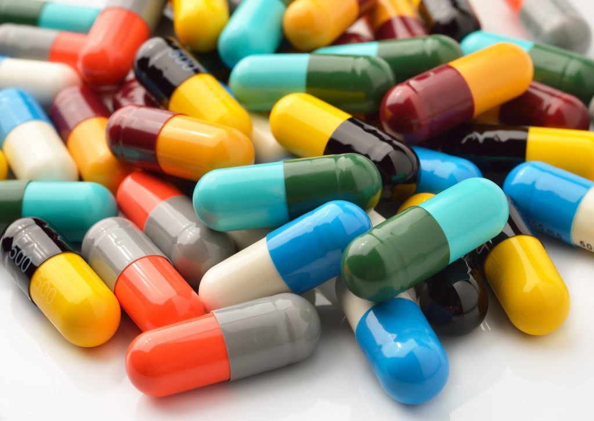

A Agência Nacional de Vigilância Sanitária (Anvisa) autorizou nesta terça-feira (20) o uso emergencial de um medicamento contra a Covid-19. Trata-se de um coquetel que contém a combinação de casirivimabe e imdevimabe, dois remédios experimentais desenvolvidos pela farmacêutica Roche. É o segundo medicamento aprovado pela agência. O primeiro foi o remdesivir.
Segundo a Anvisa, o tratamento é indicado para adultos e pacientes pediátricos (com 12 anos ou mais que pesem no mínimo 40 kg) que não necessitam de suplementação de oxigênio, com infecção por SARS-CoV-2 confirmada por laboratório e que apresentam alto risco de progressão para Covid-19 grave. O medicamento não é recomendado para pacientes graves. "Anticorpos monoclonais como casirivimabe e imdevimabe podem estar associados a piora nos desfechos clínicos quando administrados em pacientes hospitalizados com Covid-19 que necessitam de suplementação de oxigênio de alto fluxo ou ventilação mecânica", alerta a Anvisa. imabe e imdevimabe.
Segundo o órgão americano, a combinação “reduziu a hospitalização relacionada a Covid-19 ou as visitas ao pronto-socorro em pacientes com alto risco de progressão da doença em 28 dias após o tratamento, quando comparados ao placebo”. O medicamento também foi aprovado para uso emergencial no Canadá, Suíça e teve recomendação de uso pela agência europeia de medicamentos (EMA). Como funciona o coquetel? O Regn-CoV2 é feito de uma associação de dois medicamentos, o casirivimabe e imdevimabe. Eles são anticorpos monoclonais que bloqueiam a entrada do vírus na célula.